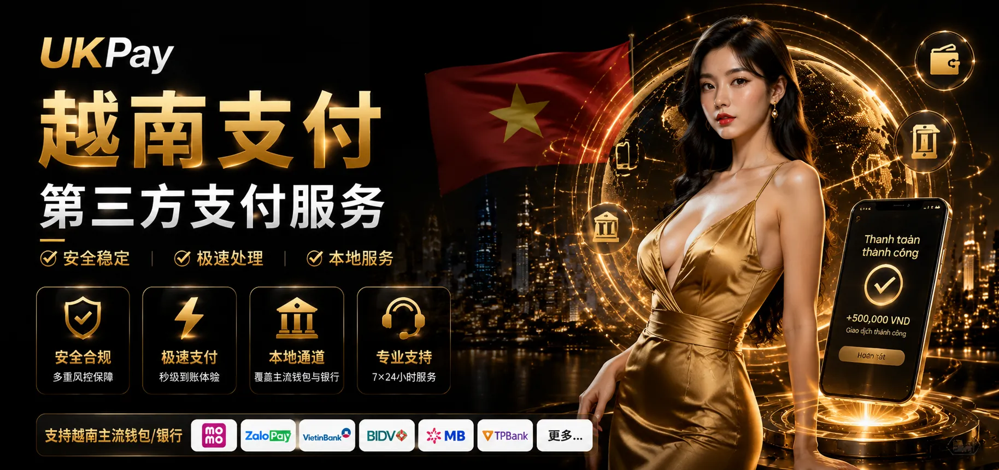

UKPay | 专业越南第三方支付公司，提供本地化支付通道
随着越南数字经济快速发展，电子商务、线上娱乐、跨境贸易以及互联网服务行业对于本地支付能力的需求不断提升。企业进入越南市场时，稳定、高效、安全的支付系统成为业务发展的重要基础。
UKPay专注于越南第三方支付服务，为全球企业提供越南支付通道、支付接口以及代收代付通道，帮助企业连接越南本地支付生态，实现快速、安全、便捷的线上交易。
通过成熟的支付技术架构和本地化支付资源，我们帮助企业降低支付接入成本，提高交易成功率，为跨境业务在越南市场长期发展提供稳定支持。

越南第三方支付服务内容及支付能力
UKPay提供完整的越南第三方支付服务体系，覆盖支付通道接入、API接口开发、交易流程管理以及资金处理方案。
根据企业不同业务模式，我们提供灵活的越南支付解决方案，支持银行卡支付、银行转账、二维码支付以及电子钱包等本地主流支付方式。

支付接口开发
提提供标准化API支付接口，支持企业系统快速对接，实现订单创建、支付通知及交易状态同步。

稳定支付通道
通过多渠道支付架构和交易监控机制，提高支付稳定性，保障企业业务持续运行。

越南本地支付
深入了解越南支付环境，为企业提供符合当地市场需求的支付接入方案。
为什么选择UKPay越南第三方支付？
- 专业越南第三方支付公司，熟悉当地支付市场环境
- 提供稳定可靠的越南支付通道，满足企业收付款需求
- 支持API接口快速接入，降低系统开发成本
- 支持越南代收代付业务，满足不同商业模式需求
- 适用于跨境电商、游戏、互联网平台等多行业应用
- 提供持续技术支持，保障支付系统稳定运行


服务行业
我们的越南第三方支付通道广泛应用于跨境电商、在线游戏、数字娱乐、SaaS平台、互联网企业以及国际贸易行业。
无论企业需要越南本地收款、用户付款处理，还是批量支付和资金管理服务，UKPay均可提供匹配业务需求的支付方案。
通过连接越南本地支付资源，帮助海外企业快速建立越南市场支付能力，提高用户支付体验和业务转化效率。